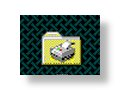

Printing in the MSC Lab
|
|
The MSC Lab has 2 printers. They are:
Lexmark Optra K1220
HP Laserjet 4ML
There is a mechanical switch box which allows users to print to the Lexmark printer(placed to the left of mechatro1). Turn the switch left if the print request is to be sent from the unix machines and turn it to the right if you wish to print from the windows machines.
The HP printer is connected to P-133 (which is a windows machine) and can be used to print only from the windows machines.
Printing from the Unix machines
To print from Mechatro1, Mechatro2, Mechatro3 or Mechatro4 type:
lpr your_file_name.ps
If this does not work then type:
lpr -P lexmark your_file_name.ps
For eg., to print out a pdf document, do the following:
Open a pdf viewer (xpdf your_file_name.pdf or acroread your_file_name.pdf)
select the print icon in xpdf or acroread. xpdf will generate a .ps file that you could later print as described . You can print directly from Acroread to the printer.
If you have any questions, please feel free to email wizard@mechatro2.me.berkeley.edu
|